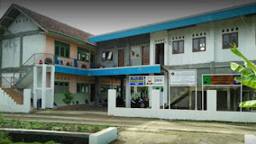
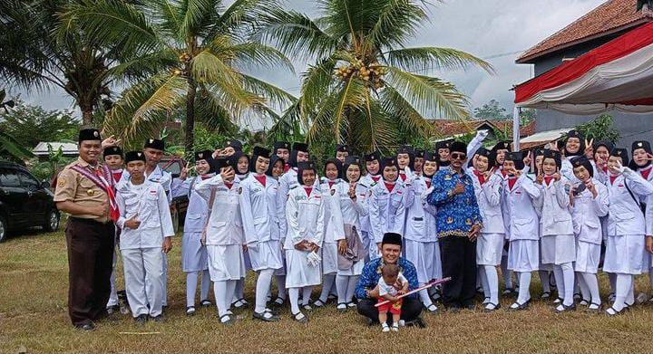
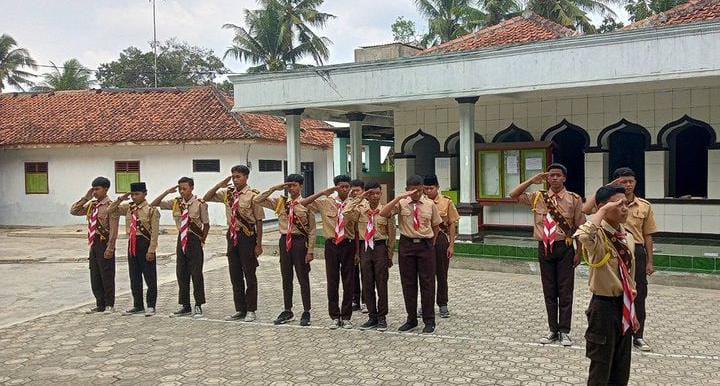

SMK BISA!
Profil Sekolah
Islamic Boarding School SMK PLUS DARUNNAJAH. Pilihan Tepat Mendidik Putra Putri Kita Menuju Solihin Was Solihat. Cerdas, Disiplin, Berprestasi, Santun dan Islami
Bidang Jurusan
Jurusan Yang Dimiliki
Rekayasa Perangkat Lunak
Teknik Bisnis Sepeda Motor
Ekstrakurikuler

Paskibra

Pramuka

Sepak Bola